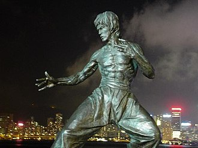

Otroštvo je preživel v Hong Kongu. Oče in mati, operni pevci, sta ga klicala Lee Siu-lung, kar je pomenilo malo zmaja. Imel je sestro in brata. Bruce je bil kot otrok zelo šibek, zato so ga večkrat pretepli. Z leti je postal zelo borben in se rad vrača k njemu v uličnih borbah. Pri 12 letih je vstopil v katoliško šolo La Salle College. Kasneje se je udeležil kolegija Francisa Xavierja, dokler njegov razburljiv temperament, nenehno prerivanje s sošolci, pomanjkanje želje, da se prijavi v študiji, kot tudi tveganje, da lahko uniči ugled družine srednjega razreda, je privedlo očeta, da ga pošlje, da živi s starim prijateljem v ZDA.Kasneje se je udeležil kolegija Francisa Xavierja, dokler njegov razburljiv temperament, nenehno prerivanje s sošolci, pomanjkanje želje, da se prijavi v študiji, kot tudi tveganje, da lahko uniči ugled družine srednjega razreda, je privedlo očeta, da ga pošlje, da živi s starim prijateljem v ZDA.
1969: Marlowe Veliki šef (1971) Pest besa (1972) Concord Production Inc. Konkordni proizvodni logotip.svg Pot zmaja (1972) 1972 Igra smrti 1973 Vstopi v Zmaja Bruceploitacija 1978 Igra smrti Igra smrti 2 1981 – Igra smrti 2
bil je igralec in umetnik borilnih veščin, specializiran za borilne veščine. Po smrti je postal legenda in je znan kot najvplivnejša osebnost borilnih veščin 20. stoletja. Njegov učitelj je bil Yip Man, mojster borilnih veščin wing-cheun. Osredotočil se je predvsem na boks, tajski boks, karate in kung fu.Predzadnja petih otrok LeeJa Hoi-chuena, kantonskega igralca in opernega pevca iz Cantona (Kitajska), ki se je prav tako ustanovil v kinu, se je Lee rodil v Kitajski četrti San Francisca med turnejo po Združenih državah Amerike, katere del so bili njegovi starši. V Hong Kongu tri mesece po Leejevem rojstvu je družina preživela veliko najstniških let med Hongkongom in ZDA, kjer je Lee diplomiral iz filozofije. KUNG FU IN USPOSABLJANJE Kljub svojim prepričanjem Lee nikoli ni resno študiral Tai Chija, saj ni ustrezal njegovim posebnostim, najprej njegovi izjemni hitrosti. Od očeta se je naučil temeljnih konceptov te starodavne umetnosti. Lee je pet let učil Kung Fu v wing chun stilu z mojstrsko Yip Man.
